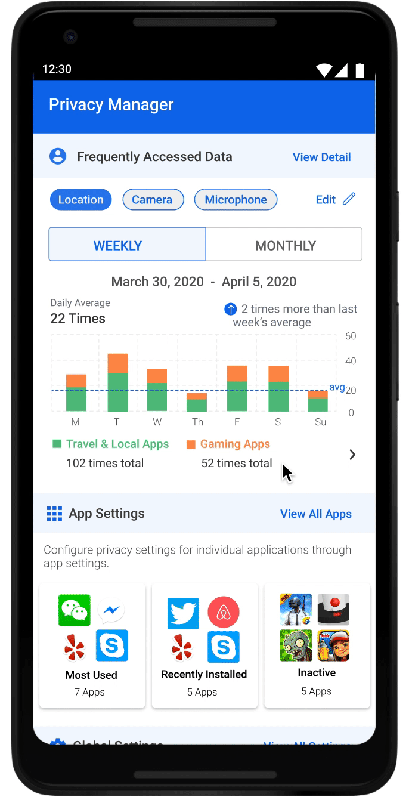
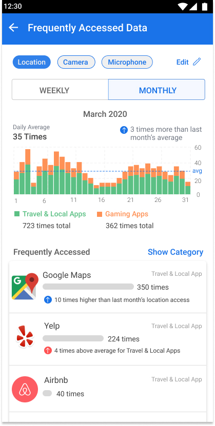

Policy Manager
Note: These final designs are not implemented in developer version
Final design - App Settings
Final Design from UX team
 Final Design - Global Setting
Final Design - Global Setting
 Final Design - Recommendations
Final Design - Recommendations
Final Design - Data Frequency Summary
UX Research Methods
PHASE 1
Card Sorting
This method was used to figure out the right information hierarchy. Cards printed out with permission names and statements such as “what data this is for”, “why it was requested”, and “who’ll be using it” on each were given to users to organize based on their own mental model. The results show 80% of the users sorted them in a “what-why-where” sequence.
A/B Testing and Think-Alouds
Designing for such a complicated system and various user types means testing again and again. The most often used method is the simplest A/B testing combined with think-alouds. For each design decision, we usually develop multiple designs to test. Asking users to perform a task and thinking aloud helped us better understand the mindset of users, thus informed us how to proceed.
Developer Walkthrough
Figuring out exactly what and how much data will be shown on each page helped us refine the design. For instance, we applied a progressive disclosure fashion for global settings. This is because after checking the log data, we realized that there could be too long a list. We also walked through the design with developers to make sure all our designs are feasible under the current Android framework.
PHASE 2
Design Comprehension Surveys
For the next phase, existing designs from phase 1 were tested through comprehension surveys on M-turk. In order to test the usefulness of previously designed interfaces, the survey was designed to gauge if people understood ‘where their data is going’ and ‘why their data is being used’. Survey results showed that the majority of users struggled to understand why apps were using their data and who was collecting their data.
Purpose Comprehension Participatory Design
Poor results from comprehension surveys required a deeper understanding of the following: why many users struggled with understanding the designs, what their needs and preferences of privacy were, and what they wanted to learn from these interfaces. The participatory design activity was aimed to understand that. Interface designs were printed and given to participants who annotated them with what worked for them, what didn’t, and how they would like to improve it. This was followed by follow-up questions to understand why they prefer certain information and what needs aren’t being fulfilled for them.
Exploratory Interviews
The participatory design activity made it clear that there were many unmet needs for users around mobile privacy. Exploratory interviews were conducted to understand current behavior of users, current limitations they deal with and their mental model around dealing with mobile privacy. Analysis of interviews showed that many users find maintaining privacy settings on mobile cumbersome, confusing and time-taking. They fully don’t understand why their data is being used which hinders them to take appropriate actions. The analysis pointed out at opportunities to make mobile privacy usable, informative, and suggestive.
Concept Testing
Findings from research were useful to inform new design rationale to iterate on previous interface design. Research suggested making policy manager more usable - hence the app setting and global setting screens were redesigned and the new concepts were tested with users to understand if it matches their needs and serves them well. In order to make it more informative - data frequency graph was introduced, and to make it more suggestive - recommendations were introduced. Concepts addressing varying needs for them were also developed and tested with users. Preferences from each concept were noted and all interface designs were reiterated to adjust to user needs.
Usability Testing
In order to the usefulness and usability of the entire app, usability tests were conducted. Specific tasks were designed to gauge if users can meet their needs and think-aloud protocol was conducted to better understand their mental models behind their actions, preferences and needs. Results showed that most users were satisfied with the policy manager with a NPS score of 20 suggesting positive feedback towards it. Usefulness rating was 6.2 while usability rating was 5.2.
The complexity and novelty of the policy manager is hard to comprehend for users on the very first go and to combat that, various on-boarding features were designed to make users aware of the capabilities and usefulness of the policy manager. The videos demonstrate the final designed version of Policy Manager.
Heuristic Evaluation
Using Neilsen-Molich’s 10 principles for heuristic evaluations, we analysed the final interface designs to achieve consistency of design, flexibility and error prevention for users, and overall ease of use and aesthetic design for the first public launch of PE-Android and Policy Manager.
Interface Design Rationales
PHASE 1
Creating the information framework
Major interfaces were designed with the ‘what-why-who’ structure to display information
Designing the Zoomin UI with Progressive Disclosure
Information on accessing permission by apps were broken down and displayed in chunks so as to be discovered one at a time and for better understanding of the relationship between the ‘what-why-who’ structure.
PHASE 2
Re-designing interface to match user's mental model
Design patterns from existing android setting designs were incorporated to match user’s expectations of current android settings and to match their mental model of the ways users maintain their privacy settings.

Re-designing the Zooming UI for ease of use and understanding
The Zooming UI was simplified to make information more glanceable and comprehensive along with giving appropriate cues to dive deeper into the Zooming UI.
Providing flexibility to explore information in different views
Filters are provided on multiple features to allow users to find, retrieve, and explore information in ways that suits them the best.

Confirming the actions taken by users with feedback and visual cues
Designs incorporating visual cues and confirmation cards are deployed throughout the features to ensure users understand the system state and the outcome of the actions they take.


Guiding users to discover features and capabilities with on-boarding features
On-boarding features were designed throughout the first-time use of the policy manager to ensure users don’t miss knowing the capabilities of policy manager and to ensure they understand what they can achieve with it.